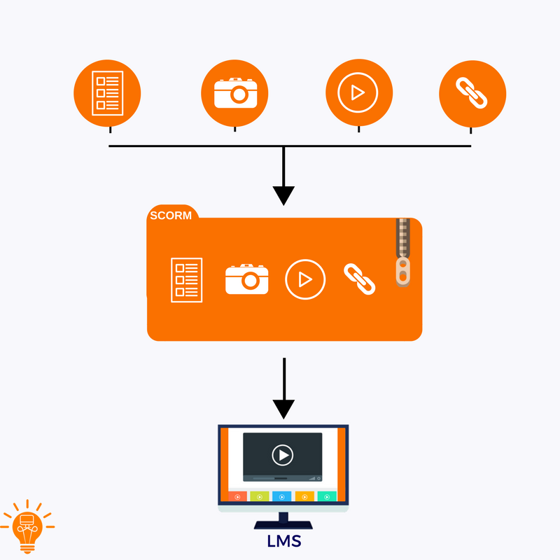

.
En esta sección se ofrece información sobre algunas herramientas de autor disponibles para que puedan crear sus lecciones interactivas, y que, a través de una interfaz, les permita acceder al contenido desde la Plataforma Educativa. Se muestran, además, algunos repositorios que contienen catálogos de objetos de aprendizaje con licencias libres de uso.
Al desarrollar un objeto de aprendizaje es importante considerar que sea posible la REUTILIZACIÓN desde lo tecnológico (Metadados) y lo pedagógico. Así como su ACCESIBILIDAD, que pueda ser leído por cualquier persona independiente de sus circunstancias personales (discapacidad física o sensoriales) y tecnológicas (hardware y software que utilice).
Exploren las herramientas y repositorios por medio de las imágenes que se les otorgan y directamente en la pantalla a través de textos realzados en azul. En el siguiente Objeto de Aprendizaje, se trabajará específicamente con una de las herramientas de autor para que desarrollen su lección interactiva.

Los Metadatos son parte constitutiva de un OVA, por lo que se debe garantizar la permanencia de ellos junto al objeto.